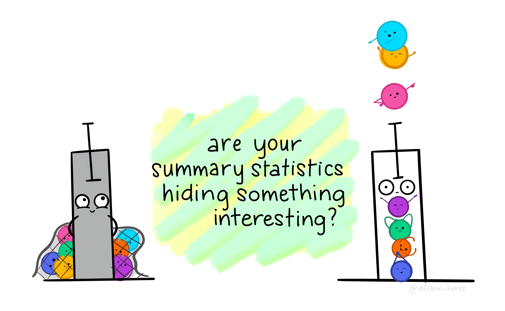
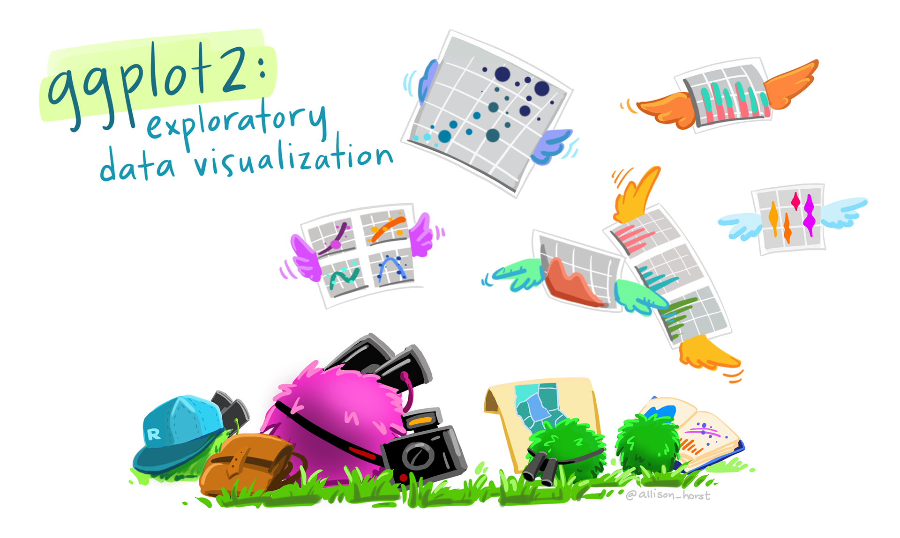
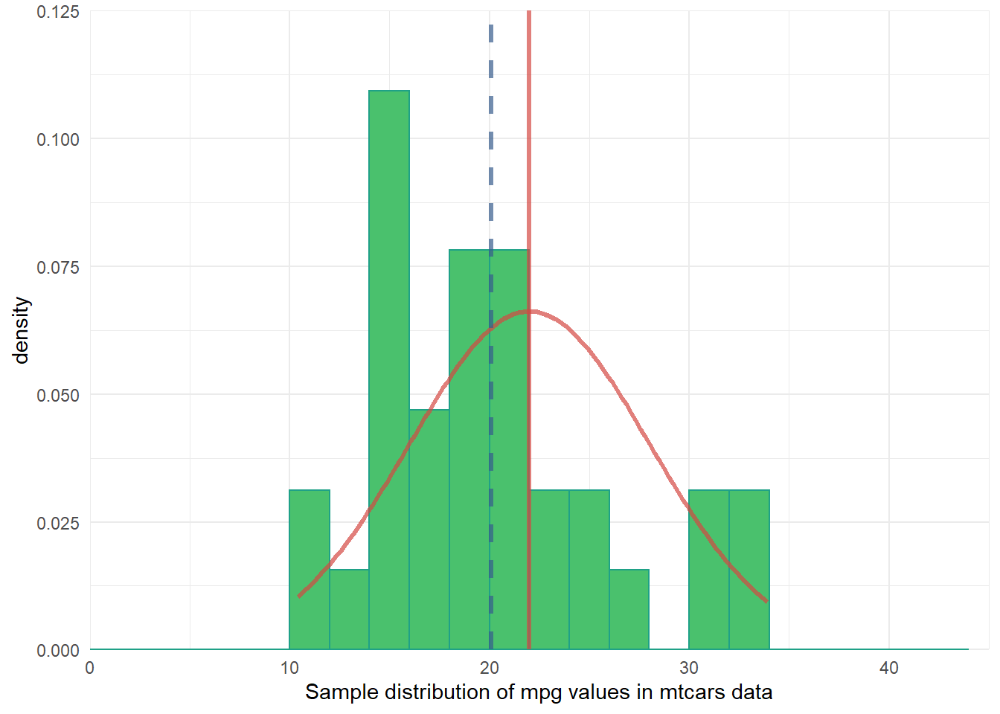
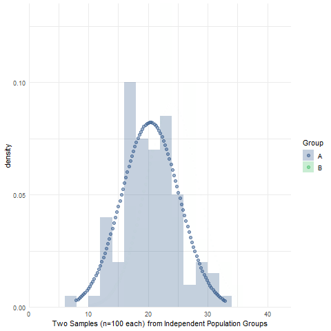

Introduction to statistics in R for criminologists
Master’s introductory data analysis (Ducate; TAMUSA CRIM-5305)

The following assignments were modified from Jon Brauer’s original undergraduate statistics course by Caitlin Ducate, an assistant professor in the Department of Social Science at Texas A&M University San Antonio. Here is a recent course syllabus. As with the original version, most of the assignments are based on exercises found in Bachman, Paternoster, & Wilson’s Statistics for Criminology & Criminal Justice, 5th Ed., which are referred to throughout as “BPW” book. Changes from original version mostly involve simplifying or adding additional images for clearer instructions; the most notable change in this version is that Brauer’s original Assignment #3 has been split into two separate assignments (Assignments #3 and #4).
Like the original version, the R assignments for this course are designed to provide a (relatively) gentle introduction to elementary foundations of frequentist statistics using R via RStudio & R Markdown. Though initially designed for Master’s students, the course is comparable to introductory statistics courses that undergraduate students take as well as the initial statistics course in a sequence that many graduate students take in pursuit of PhD degrees in criminology/criminal justice. Also, certain features of the course (e.g,. book selection; certain R package choices) were designed with the goal in mind of easing the transition to R for students and faculty with prior experience using SPSS. Hence, the R assignments may also provide a helpful bridge for graduate students prior to taking more advanced statistics courses that use R and, likewise, may be useful for criminologists at any educational or career stages interested in learning to use R for the first time.
Introduction: Tips, troubleshooting, and why R?
Before you begin the assignments below, we recommend watching this brief introductory video. In it, Dr. Caitlin Ducate explains why it is worth your time to learn data analysis skills in R/RStudio, describes basic features of the R language, highlights things you can do in R, and gives advice for troubleshooting with R.
Introductory video (by Caitlin Ducate)

here() package by @allison_horstAssignment 1: Getting Started in R
The purpose of this first assignment is to demonstrate that you have downloaded the “base R” and “RStudio” statistical programs and can open a SPSS datafile in RStudio. Additionally, you will learn how to create, edit, and knit an R Markdown file.
Video walkthrough for Assignment 1 (by Caitlin Ducate)


Assignment 3: Describing Data Distributions
Chapter 2 of B&P’s book focused on data distributions. In this assignment, you will learn how to generate frequency tables in R.
Video walkthrough for Assignment 3 (by Caitlin Ducate)

dplyr::mutate() by @allison_horstAssignment 4: Recode & Visualize Variables
Chapter 3 of B&P’s book focused on visualizing data. In this assignment, you will learn how to recode variables and create a simple graph in R.
Video walkthrough for Assignment 4 (by Caitlin Ducate)

Assignment 5: Central Tendency
BPW’s chapter 4 focused on measures of central tendency (e.g., mean, median, and mode,) and their advantages and disadvantages as single statistical descriptions of a data distribution. Likewise, in this assignment, you will learn how to use R to calculate measures of central tendency and other statistics (e.g., skewness; kurtosis) that us help standardize and efficiently describe the shape of a data distribution. You will also get additional practice with creating frequency tables and simple graphs in R.
Video walkthrough for Assignment 5 (by Caitlin Ducate)

ggplot2() by @allison_horstAssignment 6: Dispersion
BPW’s chapter 5 covered measures of dispersion, including variation ratio, range, interquartile range, variance, and standard deviation. We use measures of dispersion to summarize the “spread” (rather than central tendency) of a data distribution. Likewise, in this assignment, you will learn how to use R to calculate measures of dispersion and create boxplots that help us standardize and efficiently describe the spread of a data distribution. You will also get additional practice with creating frequency tables and simple graphs in R, and you will learn how to modify some elements (e.g., color) of a ggplot object.
Video walkthrough for Assignment 6 (by Caitlin Ducate)

dplyr::filter() by @allison_horstAssignment 7: Probability & Cross-tabulations
BPW’s chapter 6 provided an introduction to probability, including foundational rules of probability and probability distributions. In the current assignment, you will gain a better understanding of frequentist probability by learning to create and interpret cross-tabulations or joint frequency contingency tables and by calculating z-scores.
Video walkthrough for Assignment 7 (by Caitlin Ducate)

Assignment 8: Sampling Variability & Confidence Intervals
In this assignment, we dig deeper into the process of making statistical inferences about population parameters from sample statistics. For instance, you will learn to think about sample descriptive statistics (e.g., a sample mean or correlation coefficient) as point estimates of population parameters. Relatedly, following BPW’s chapter 7, you will learn how to calculate confidence intervals around a point estimate in R and to interpret them appropriately. Additionally, you will learn how to simulate data from a probability distribution, which should help you better understand sampling variability and the need for interval estimates.

Assignment 9: One-sample Null Hypothesis Test
Following BPW’s chapter 8, in this assignment you will learn how to conduct a two-tail z-test and t-test and then, given the test results and the null hypothesis, to make an appropriate inference about the population parameter by either rejecting or failing to reject the null hypothesis. Along the way, you will explore plots of data distributions from random samples drawn from simulated population data. This exploration is intended to help you visualize the sampling distribution of a sample mean, which should lead to a better understanding of the underlying mechanisms that allow us to make valid population inferences from samples with null hypothesis significance testing.

Assignment 10: Chi-squared Test of Independence
As in BPW’s chapter 9, in this assignment you will learn how to make population inferences about the relationship between two categorical variables by conducting a chi-squared test of independence on a sample contingency table (crosstab). Additionally, we will briefly introduce you to the phi-coefficient and Cramer’s V, two measures of association that can be interpreted to describe the strength of an association between variables in a crosstab.

Assignment 11: Two-sample Null Hypothesis Test
BPW’s chapter 10 focused on null hypothesis tests to make inferences about the equality of two group means or proportions using sample data. Likewise, in this assignment, you will learn how to make an inference about the (in)equality of two population group means by conducting an independent sample t-test and then determining whether to reject or fail to reject the null hypothesis of no difference in population group means. We will also use simulations to visualize the sampling distribution of sample mean differences, briefly introduce Levene’s test of equality of population group variances, and introduce the half-violin/half-dotplot as a way to visualize variable distributions and potential outliers for two (or more) groups.
Reuse
Citation
@online{ducate,
author = {Ducate, Caitlin},
title = {Introduction to Statistics in {R} for Criminologists},
url = {https://www.reluctantcriminologists.com/course-materials/4_grad_stats_Ducate},
langid = {en}
}